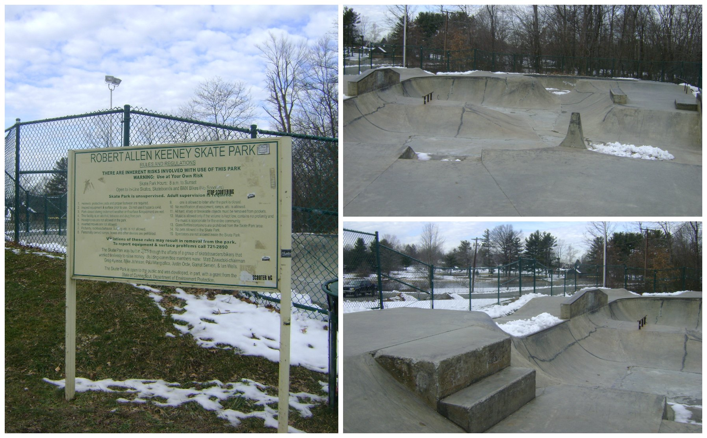

About Me
Hello and Welcome, my name is Ethan Morris. I am an undergraduate student at the University of Hartford, CT
pursuing a career in Computer Engineering Technology. I have always enjoyed technology and computers in general
but recently decided to pursue a career in the field. This site is a collection of my works, interests, and hobbies.

Aside from music I have also been learing how to program using c++. More recently I have begun working on a 2D, top-down style zombie shooter game using OpenGL. It still amazes me how complex these programs are and since attempting to create this game I have gained a whole new level of respect for all types of developers.
On another note, I have also been skateboarding since the 6th grade. Growing up my town didn't offer many resources for kids who did not take a liking to sports teams, so naturally me and the group of friends that I skated with were constantly getting in trouble for skateboarding around town and behind shopping centers. This sparked a revolution and with a lot of help from friends/family we all bounded together to get a skatepark built. It took several fundraisers and a grant from the state but Wethersfield Skatepark is still one of the hottest spots for skaters in CT. 